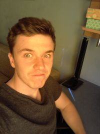

Kilka słów o autorze
Mam na imię Piotrek i stworzyłem tą stronę jako jeden z moich projektów podczas nauki programowania webowego. Czemu akurat taka tematyka? Ponieważ będąc dzieckiem zagrywałem się w takie pozycje jak Contra, Super Mario Bros, Gun Smoke, Battletoads, Duck Hunt etc., więc postanowiłem połączć naukę programowania z tematem, który lubię i mam z nim wiele miłych wspomnień. Postawiłem sobie za cel by ta strona była w pełni responsywna. Zapraszam do przeglądania, testowania i odkrywania zawartości. Szczegółowe informacje o konsoli czerpałem z Wikipedii, oraz kanału na YouTube arhn.eu.